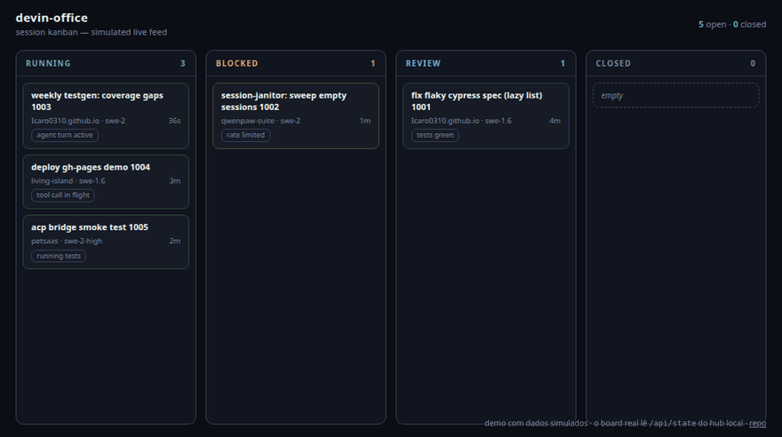
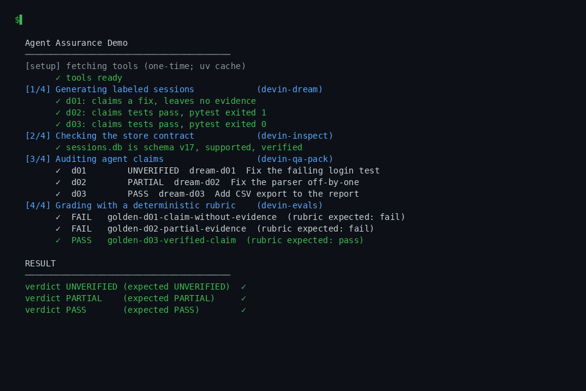

Ícaro Galvão
Senior QA Engineer · AI Agents
I build devin-* — first-party local-first tools for Devin, distributed through a profile-based DevKit. The registry, maintainer hub and related artifacts are cataloged separately. No cloud, no telemetry, nothing to sign up for.
Ecosystem
Execution environments
Linux
Extended runtime: local execution plus optional delegated workloads through Devin VM or QwenPaw.
extendedPersonal Windows
Extended runtime: local Windows execution plus optional delegated workloads and Linux-compatible VM tooling.
extendedCorporate Windows
Local-only runtime: no VM, QwenPaw, Slack dependency, external compute or workload delegation.
local onlyAbout
Senior QA Engineer, post-graduated in Software Testing and Software Engineering. I work at the intersection of quality engineering and developer tooling — and I spend my open-source time building instruments for the thing most agent platforms leave opaque: their own local data.
The devin-* ecosystem is that work in public: MIT-licensed, local-first tools for the Devin CLI — diagnostics, history export, backup, metrics, memory, evaluation and safety. The DevKit distributes selected profiles; the maintainer hub and optional integrations remain separate. Linux and Personal Windows form the extended runtime with optional VM/QwenPaw delegation; Corporate Windows is an explicit local-only mode. The Devin-only core needs no VM, tunnel or external service.
What do you want to do?
Understand
Observe sessions, activity and behavior.
devin-explore · devin-graph · devin-history · devin-internals-spec · devin-search
Verify
Validate claims, actions and outcomes.
Control
Constrain execution, data and lifecycle.
devin-backup · devin-bridge · devin-janitor · devin-brain · devin-orchestrator · devin-office · devin-state · devin-switch
Build
Create integrations and tooling.
devin-devkit · devin-powerups · devin-skill-catalog
Full catalog → awesome-devin · by audience · by interface · related: devin-pm (project reporting)
Pick your path
Curated starting points by role — each chain is an ordered path through the ecosystem, generated from the same registry as awesome-devin.
AI engineers
Developers
End users
Maintainers
Operations
devin-explore → devin-backup → devin-janitor → devin-metrics.
QA engineers
Security engineers
See the demos

devin-office — circuit board
Local session dashboard. Live view when a Devin session source is available; demo mode uses synthetic data. This demo shows sessions, subagents and tool activity as an animated SVG circuit board.

devin-office — session kanban
The same dashboard as a session kanban. Cards move across RUNNING, BLOCKED, REVIEW and CLOSED. This demo uses synthetic data.

devin-assure — agent assurance
A flawed agent session goes in; a defensible PASS / PARTIAL / UNVERIFIED verdict comes out. Claims audited against tool-call evidence.
Selected work
devin-assure
Audit the agent — flagship evidence gate: claims vs. reality, reported as PASS / PARTIAL / UNVERIFIED.
01 · audit · ★1 · v0.1.0devin-explore
Diagnose the install — stores, schema, locks, config and disk with concrete fixes.
02 · diagnose · ★4 · v0.1.0devin-office
Watch the runtime — sessions, subagents and tools as an animated circuit board (live view when a session source is available, synthetic demo otherwise).
03 · watch · ★1 · v0.1.0devin-internals-spec
Understand the system — Devin's store internals documented: schema detection, typed parsers, fixtures.
04 · understand · ★1 · v0.2.0devin-evals
Evaluate quality — replay recorded sessions against deterministic rubric graders.
05 · evaluate · ★1 · v0.2.0devin-state
Protect the evidence — secret/PII redaction that understands tool-call semantics.
06 · protect · ★1Insight
devin-explore
brew doctor for a Devin install — stores, locks, config, disk → concrete fixes.
diagnostics · ★4 · v0.1.0devin-history
Session history → Markdown, JSON, CSV, Obsidian-ready.
export · ★1 · v0.1.0devin-pm
Project manager over sessions — rollups, milestones, status reports.
reporting · ★1Safety
devin-backup
Snapshot, verify, restore, rotate — with schema-version manifests.
backup · ★1devin-state
State lifecycle monorepo — redaction, backup and janitor for Devin stores.
security · ★1devin-metrics
Activity, context size and token peaks per project/model/day — local only; no cost fields are persisted by Devin.
observability · ★1Memory & recall
devin-graph
Knowledge graph — sessions ↔ projects ↔ files ↔ tools.
graph · ★1devin-search
FTS5 full-text search across every session.
search · ★1devin-brain
Anti-poisoning memory — provenance, versioning, quarantine.
memory · ★1Ops
devin-janitor
Session lifecycle — export-then-delete, tiered, dry-run first.
automation · ★1devin-orchestrator
Background-worker fan-out — deterministic planner, caps, no nesting.
orchestration · ★1devin-office
Devin activity as an animated SVG circuit board — live view when a session source is available, synthetic demo otherwise.
dashboard · ★1 · v0.1.0Governance
devin-skill-catalog
Skill and rule lifecycle — scan, lint, G1–G3 evidence gates, quarantine → active, sha256 bundles.
lifecycle · new · ★1devin-switch
Swap Devin config profiles — hooks, MCP, models — with a verified snapshot, dry-run first, rollback.
profiles · new · ★1Distribution
Maintainer hub
Related
devin-judge
Calibrated decision layer using Devin's own model through ACP, with an offline NLI fallback.
tool · decision layer · ★6 · v0.1.1qwenpaw-suite
Optional add-on — Ollama ↔ OpenAI bridge for self-hosted model operators.
related suite · optional · ★1awesome-devin
Curated list of Devin resources and the devin-* open-source tooling ecosystem.
related resource · curated list · ★1devin-bridge
Policy-gated ACP client for the Devin CLI: isolated sessions with allow/deny/ask rules
new · ★1 · v0.1.0devin-dream
Synthetic Devin sessions with known verdicts — regression and adversarial test data for the devin-* catalog
new · ★1Why devin-*?
Where does the Devin CLI store its session data?
In local SQLite stores under ~/.local/share/devin/cli/ plus ~/.config/Devin/ on Linux, or %APPDATA%\devin\ and %APPDATA%\Devin\ on Windows. devin-internals-spec documents the schema and detection logic.
How do I export Devin sessions?
devin-history reads the sessions DB and exports Markdown, JSON or CSV — including Obsidian-ready notes.
How do I back up and restore Devin's local data?
devin-backup snapshots the stores with schema-version manifests, then verifies, restores and rotates them.
How do I remove secrets from exported history before sharing?
devin-redact understands tool-call semantics, not just plaintext patterns — redacting in place inside SQLite, with a .bak safety copy.
Can I run all of this on a locked-down corporate machine?
The DevKit-installable core can. Corporate Windows is an explicit local-only environment: no VM, no tunnel, no model server, no Slack, no Obsidian. The registry marks qwenpaw-suite unsupported there, and devin-bridge needs Node.js ≥ 20 because it is an ACP client for the Devin CLI itself. Heavy offload, wake-while-idle and remote reach remain outside the corporate guarantee.
Does any of this send telemetry or need an account?
No. Everything is local-only and MIT-licensed. Nothing phones home; there is nothing to sign up for. Inspection tools are read-only; the tools that write (backup, janitor, redact) do so explicitly and visibly.